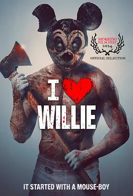

4.1
追魂米老鼠
I Heart Willie
2025
其他
评分 4.1
导演:
Alejandro G. Alegre
演员:
Maya Luna / Sergio Rogalto / Daniela Porras / Micho Camacho / David Vaughn
类型:
恐怖,悬疑,惊悚
剧情简介
黑暗的墨西哥乡村，一群思维跳脱的 YouTube 探险者带着摄像机和热血涌进一座被传为“鼠男”出没的废弃庄园。诺拉（Maya Luna 饰）对被称为「威利」的人物有着不寻常的执念，她说自己曾在孩童时期窥视过那段怪诞历史。好友丹尼尔（Sergio Rogalto 饰）与尼科（Micho Camacho 饰）将镜头对准这座庄园，只想寻得拍摄素材，但夜幕一降，他们便陷入一场比“探险”更危险的深陷。掩在黑暗中的，他那个鼠面具、皮肤如同残屑的身体，静静等待。血肉的撕裂声在走廊回荡，闪白的灯光映出一具具扭曲的尸骸。诺拉才发现，这不仅仅是恐怖传说的再现——她和威利之间，有着更为细致却被遗忘的关联。影片压迫感如同鼠洞深处的呼吸声，声响忽远忽近，观众几乎无法分辨下一秒会是谁被拖入那个手术刀般冷漠的游戏。导演将一个被卡通符号化的形象转化为血淋淋的现实恐惧——当童年符号失控，戏谑变成猎物，镜头捕捉的不是童趣，而是猎杀。我曾在午夜看完，走出影院时，夜风像是带走了最后一个被掀开的“鼠门”——而我却明白，那门早已在我没察觉时打开了。